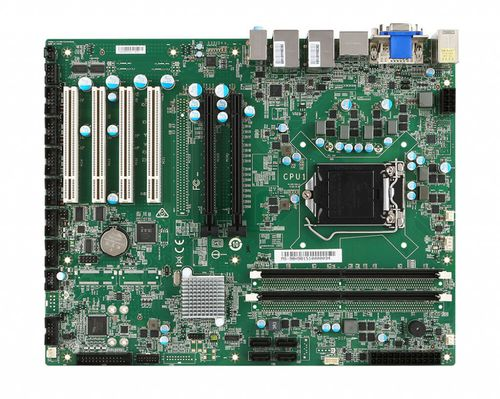
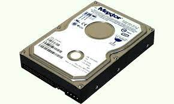
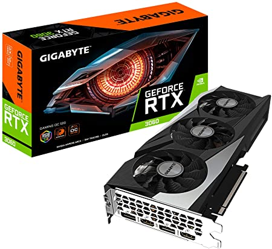
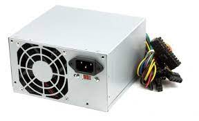
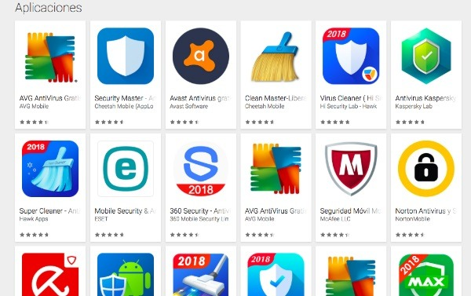
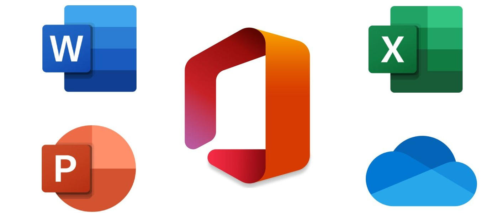
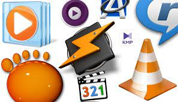
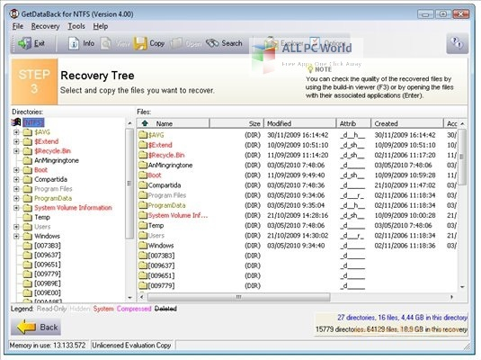

Soporte Tecnico de Computadoras
El Soporte Técnico de Computadoras se realiza en todas las tareas de mantenimiento, actualizaciones, reparaciones de PC. Nuestro objetivo es que la informática para Ud. sea una herramienta en la que haga su trabajo más fácil y de la que no tenga que preocuparse para nada ,los servicios de soporte técnico tratan de ayudar al usuario a resolver determinados problemas con algún producto en vez de entrenar o personalizar. En general, el servicio de soporte técnico sirve para ayudar a resolver los problemas que puedan presentárseles a los usuarios, mientras hacen uso de servicios, programas o dispositivos.
Importancia del Mantenimiento y Cuidado del computador
Un computador debe cuidarse y mantenerse para prevenir problemas. En un computador hay dos cosas que deben cuidarse: el hardware (la parte física) y el software (los programas y la información que contiene). Se entiende por mantenimiento del computador al conjunto de acciones que deben realizarse periódicamente para mantener al computador en óptimo estado de funcionamiento.
Que es un Mantenimiento
Es el cuidado que se le da a la computadora para prevenir posibles fallas, se debe tener en cuenta la ubicación física del equipo ya sea en la oficina o en el hogar, así como los cuidados especiales cuando no se está usando el equipo. Hay dos tipos de mantenimiento, el preventivo y el correctivo.
Porque realizar un Mantenimiento
- Las computadoras necesitan ser "limpiados" para mantenerse en perfectas condiciones.
- La vida útil de una computadora se puede prolongar.
- El polvo, calor, humedad, cargas eléctricas son puntos a tener en cuenta en el mantenimiento.
- Las "impurezas" de la energía eléctrica causan daños progresivos a nuestra PC.
- El encendido y apagado permanente de la PC es dañino para la PC.
- Los virus informáticos impiden un normal funcionamiento de la computadora.
- Los archivos temporales cargan demasiado la memoria de la PC.

Mantenimiento de Hadware
En general, para un buen funcionamiento del equipo se requiere ciertas condiciones ambientales que deben ser controladas. Así, el computador nunca puede estar expuesto al agua ni a una humedad excesiva. Hay que cuidarlo de las temperaturas altas y de la incidencia en él de la luz del sol de forma directa.
Por su parte, los cuidados con el equipo en sí se limitan a mantenerlo libre de polvo y suciedades, tanto externa como internamente, y a evitar en lo máximo posible los golpes.
Mantenimiento de Software
Además de estas recomendaciones para mantener limpio el hardware de tu computadora, en lo que se refiere al software tendrás que tener mucho cuidado cuando descargues o instales algún archivo o programa, ya que pueden entrar muchos virus en tu ordenador. Para este fin, es bueno que tengas instalado un potente antivirus.
Por su parte, las actualizaciones del sistema operativo, tanto automáticas como manuales, son también muy importantes. Protegen al equipo de múltiples amenazas. Es por ello que es tan necesario permitir que se ejecuten las actualizaciones automáticas como acceder regularmente a los desarrolladores del software para verificar la existencia de actualizaciones y nuevas versiones a disposición de los usuarios.
Herramientas
Desarmadores
Se utilizan para desarmar y armar nuestra PC al momento de hacer mantenimiento interno, así como para desmontar tarjetas madres y volver a montar.
sopladora o Aspiradora
Una aspiradora es un dispositivo que utiliza una bomba de aire para aspirar el polvo y otras partículas pequeñas de suciedad
Brochas
Son utilizadas para la limpieza por lo regular internas de la PC estas brochas son echas de pelo de camello para que no suelten pelusa, también pueden utilizarse para el teclado, el mouse, etc.
Alcohol Isopropilico
Dentro de la computación es el líquido más importante para realizar limpiezas de tarjetas de los equipos
(Computadoras, impresoras, monitores, etc.), es un compuesto que tiene un secado demasiado rápido por lo cual ayuda a realizar un trabajo muy eficiente.
Es un alcohol que remueve la grasa con gran facilidad por lo cual ofrece una gran seguridad al Introducción.
Multimetro
es un instrumento eléctrico portátil para medir directamente magnitudes eléctricas activas como corrientes y potenciales (tensiones) o pasivas como resistencias, capacidades y otras. Las medidas pueden realizarse para corriente continua o alterna y en varios márgenes de medida cada una. Los hay analógicos y posteriormente se han introducido los digitales cuya función es la misma (con alguna variante añadida).
Hadware
El hardware son aquellos elementos físicos o materiales que constituyen una computadora o un sistema informático. Es decir, son aquellas partes físicas de un sistema operativo tales como sus componentes eléctricos, electrónicos, electromecánicos, mecánicos y cualquier elemento físico que esté involucrado.
Placa Base o Madre
Una placa base es el componente común donde se interconectan todos los demás componentes en cualquier dispositivo electrónico. ... El chipset de la placa base es el que dictamina cómo van a ser distribuidas las conexiones por los buses de la placa base, y va en consonancia con la gama del procesador y sus especificaciones.

Memoria Ram
La sigla RAM hace referencia a la memoria de acceso aleatorio, ¿pero qué significa eso? La RAM de tu computadora es esencialmente memoria a corto plazo, en la cual se guardan datos a medida que el procesador lo requiere. ... Esto es así para que tu procesador pueda llegar allí rápidamente.
Memoria Rom
La memoria ROM se llama así por las siglas en inglés Read Only Memory, o memoria de solo lectura. La mayor diferencia entre la memoria RAM y la ROM es que la ROM no es volátil, es decir, la información almacenada se retiene aunque apaguemos el PC.

Procesador
Como bien indican sus siglas en inglés (Central Processing Unit) es la unidad de procesamiento encargada de interpretar las instrucciones de un hardware haciendo uso de distintas operaciones aritméticas y matemáticas.
Tarjeta Grafica
La tarjeta gráfica o tarjeta de vídeo de un componente que viene integrado en la placa base del PC o se instala a parte para ampliar sus capacidades. Concretamente, esta tarjeta está dedicada al procesamiento de datos relacionados con el vídeo y las imágenes que se están reproduciendo en el ordenador.

Fuente de Alimentacion
En electrónica, la fuente de alimentación o fuente de potencia es el dispositivo que convierte la corriente alterna, en una o varias corrientes continuas, que alimentan los distintos circuitos del aparato electrónico al que se conecta.

Software
El software permite administrar los recursos que necesita el sistema operativo del computador para manejar los programas y aplicaciones. El software sirve como puente para que el usuario interactúe con el hardware a través de este.
Sistema Operativos
Un sistema operativo es el conjunto de programas de un sistema informático que gestiona los recursos de hardware y provee servicios a los programas de aplicación de software, estos programas se ejecutan en modo privilegiado respecto de los restantes.
Controladores de Dispositivos
Un controlador de dispositivo o manejador de dispositivo es un programa informático que permite al sistema operativo interactuar con un periférico, haciendo una abstracción del hardware y proporcionando una interfaz para utilizar el dispositivo.
Herramientas de Diagnostico
Los antivirus son programas cuyo objetivo es detectar y eliminar virus informáticos. Con el paso del tiempo, los antivirus han evolucionado hacia programas más avanzados que además de buscar y detectar virus informáticos consiguen bloquearlos, desinfectar archivos y prevenir una infección de los mismos.

Herramientas de Correccion y Optimizacion
CCleaner es un programa para Windows que permite mantener el sistema operativo optimizado para un funcionamiento más rápido. ... CCleaner es una potente herramienta, bien conocida en el contexto informático, que habilita al usuario el poder tener un ordenador limpio por dentro, por así decirlo.
Otros programas
Navegadores
Un navegador web es un software, aplicación o programa que permite el acceso a la Web, interpretando la información de distintos tipos de archivos y sitios web para que estos puedan ser vistos.
Ofimatica
Microsoft Office es un paquete de programas informáticos para oficina desarrollado por Microsoft Corp. (una empresa estadounidense fundada en 1975). Se trata de un conjunto de aplicaciones que realizan tareas ofimáticas, es decir, que permiten automatizar y perfeccionar las actividades habituales de una oficina.

Programas de Diseño
Es un programa que se utiliza para la edición, a nivel profesional, de imágenes y archivos, composición de diseños digitales, edición de fotos e incluso para diseño de páginas web, aplicaciones y programas.
Reproductores Multimedia
Un reproductor multimedia digital es un dispositivo que almacena, organiza y reproduce archivos de video, audio e imágenes.

Backup
El software de respaldo son programas de computadora utilizados para realizar un respaldo; crean copias exactas suplementarias de archivos, bases de datos o computadoras enteras. Estos programas pueden usar más tarde las copias suplementarias para restaurar el contenido original en caso de pérdida de datos.

Programas para la recuperacion de archivos
es una aplicación que recupera los archivos perdidos de cualquier medio de almacenamiento. Puede recuperar los archivos que se eliminan accidentalmente o se pierden debido a un ataque de virus, un fallo del disco duro o por cualquier otro motivo.


.jpeg)
.jpeg)
.jpeg)

.jpeg)
.jpeg)
.jpeg)
.jpeg)
.jpeg)
.jpeg)
.jpeg)

.jpeg)
.jpeg)
.jpeg)
.jpeg)
.jpeg)
.jpeg)
.jpeg)